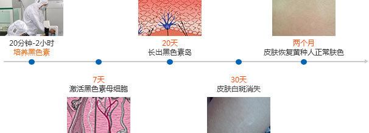
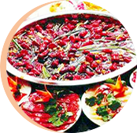
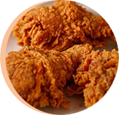
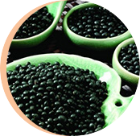

导语
introduction
白癜风是一种世界性的皮肤顽固性疾病，其病症易于诊断但是治疗的难度却十分的巨大。 白癜风在全世界人群发病率为1%到2%左右，我国是人口大国，约有13亿人口，其中就有1200多万白癜风患者， 病人之多，分布地域之广触目惊心，而且近年发病有增多趋势。这是一个以千万计的庞大群落， 其病症不但给患者的容貌带来了损害，也给广大患者的生活、工作、学习带来无穷的痛苦， 长时间以来，白癜风一直都是令患者十分头疼的一种病变，而且也会从很大程度上给患者的心理带来严重影响。
病因篇：白癜风困扰了你多少年？
Etiology: vitiligo troubled you for how many years
常见白癜风病因
白癜风发病机制：黑素细胞（MC）破坏是白癜风发生皮肤脱色性斑的主要原因。 白癜风尽管其病因不清，但已有多种理论：如自身免疫、自身细胞毒和神经假说等相继提出。 白癜风的发病可能与遗传、免疫、黑素细胞自毁、神经化学因子以及某些微量元素如铜、锌等有关。 白癜风有时也可因口服药如氯奎、氯苯酚嗪引起 。


-
Q1
为什么我家小孩会患上这种病？
为什么我家小孩会患上这种病？
白癜风是一种由于黑色素细胞明显减少或缺失而引发的皮肤、黏膜和毛发色素脱失性疾病。 白癜风的发病原因比较复杂，包括自身免疫学说、黑色素细胞自身破坏学说、神经化学因子学说 、遗传因素、微量元素变化及精神因素、微循环障碍、饮食、情绪、烟酒、药物刺激、 机械性刺激、手术、外伤、等等多种诱因的作用所致。
-
Q4
眼皮上的白斑是怎么回事？
眼皮上的白斑是怎么回事？
您可以仔细观察一下，白斑表面是否光滑无皮屑，白斑呈淡白色或乳白色， 如果边界模糊不清或朝正常皮肤扩散的话，有可能是白癜风，具体情况需要看到白斑后才可以确诊， 白癜风属于难治疾病，最大的特点就是易扩散，尤其影响美观及生活， 建议您及时到国家正规的专业治疗白癜风的科研机构进行检测就诊，以免延误病情及治疗最佳时期。
-
Q7
白癜风这种病的发病原因都有哪些？
白癜风这种病的发病原因都有哪些？
白癜风是一种由于黑色素细胞明显减少或缺失而引发的皮肤、黏膜和毛发色素脱失性疾病。 白癜风的发病原因比较复杂，包括自身免疫学说、黑色素细胞自身破坏学说、 神经化学因子学说、遗传因素、微量元素变化及精神因素、微循环障碍、饮食、 情绪、烟酒、药物刺激、机械性刺激、手术、外伤、等等多种诱因的作用所致。
-
Q2
身上的白斑是怎么回事？
身上的白斑是怎么回事？
您可以仔细观察一下，白斑表面是否光滑无皮屑，白斑呈淡白色或乳白色， 如果边界模糊不清或朝正常皮肤扩散的话，有可能是白癜风，具体情况需要看到白斑后才可以确诊， 白癜风属于难治疾病，最大的特点就是易扩散，尤其影响美观及生活，建议您尽快到带孩子到当地儿童医院系统诊治， 可以开些微量元素的补剂，以此控制病情发展，等孩子四岁以后要及时带孩子到白癜风专业治疗白癜风的科研机构病因检测， 查明黑色素缺失诱因，从病根入手针对性治疗，以免延误病情。祝孩子早日康复！
-
Q5
小腿出现白斑是怎么回事？
小腿出现白斑是怎么回事？
您可以仔细观察一下，白斑表面是否光滑无皮屑，白斑呈淡白色或乳白色，如果边界模糊不清或朝正常皮肤扩散的话， 有可能是白癜风，具体情况需要看到白斑后才可以确诊，白癜风属于难治疾病，最大的特点就是易扩散， 尤其影响美观及生活，建议您及时到国家正规的专业治疗白癜风的科研机构进行检测就诊，以免延误病情及治疗最佳时期。
-
Q8
婴儿得白癜风主要原因是什么？
婴儿得白癜风主要原因是什么？
白癜风的发病原因比较复杂，包括自身免疫学说、黑色素细胞自身破坏学说、神经化学因子学说、 遗传因素、微量元素变化及精神因素、微循环障碍、饮食、情绪、烟酒、药物刺激、机械性刺激、 手术、外伤、等等多种诱因的作用所致。此病属于难治性疾病，最大的特点就是扩散， 建议您尽快到带孩子到当地儿童医院系统诊治，可以开些微量元素的补剂，以此控制病情发展， 等孩子四岁以后要及时带孩子到白癜风专业治疗白癜风的科研机构病因检测， 查明黑色素缺失诱因，从病根入手针对性治疗，以免延误病情。祝孩子早日康复！
-
Q3
孩子这么小就得此病为什么呢？
孩子这么小就得此病为什么呢？
白癜风是一种由于黑色素细胞明显减少或缺失而引发的皮肤、黏膜和毛发色素脱失性疾病。 白癜风的发病原因比较复杂，包括自身免疫学说、黑色素细胞自身破坏学说、神经化学因子学说、遗传因素、 微量元素变化及精神因素、微循环障碍、饮食、情绪、烟酒、药物刺激、 机械性刺激、手术、外伤、等等多种诱因的作用所致。
-
Q6
白癜风的原因，如何治疗？
白癜风的原因，如何治疗？
白癜风的发病原因比较复杂，包括自身免疫学说，黑色素细胞自身破坏学说， 神经化学因子学说，遗传因素，微量元素变化及精神因素，微循环障碍， 饮食，情绪，烟酒，药物刺激，机械性刺激，手术，外伤，等等多种诱因的作用所致。
建议可以通过“ORG五维立体诊疗体系”进行治疗，此疗法是目前临床上最为先进的治疗方法， 它通过4大类14小类超百项的检测技术查出发病诱因， 针对发病诱因制定个性化的治疗方案，积极配合医生治疗可以取得较好效果，同时加强日常防护，尽快把病治好！祝早日康复。
-
Q9
医生帮忙解答是白癜风吗？
医生帮忙解答是白癜风吗？
您可以仔细观察一下，白斑表面是否光滑无皮屑，白斑呈淡白色或乳白色， 如果边界模糊不清或朝正常皮肤扩散的话，有可能是白癜风，具体情况需要看到白斑后才可以确诊， 白癜风属于难治疾病，最大的特点就是易扩散，尤其影响美观及生活， 建议您及时到国家正规的专业治疗白癜风的科研机构进行检测就诊，以免延误病情及治疗最佳时期。
诊断篇：看图识别白癜风早期症状
Diagnosis: the early symptoms of vitiligo picture recognition
白癜风为一种以皮肤色素脱失为特征的皮肤顽疾。 是由于某些致病因子(化学及重金属毒物)或精神创伤等因素，导致机体内分泌功能失调、免疫功能紊乱， 造成自体色素细胞损伤，色素细胞自表皮脱失形成局限性白斑(亦称皮损)。 但近几年发现先天性脱色素斑也可以发展演变为白癜风，其特点是先在局部发展，继则扩散至体表的其它部位， 颜色由淡白色逐渐转变为纯白色，此时可确诊为白癜风，并应及时治疗。

-
Q1
我脸上出现一块白斑是白癜风吗？
我脸上出现一块白斑是白癜风吗？
您可以仔细观察一下，白斑表面是否光滑无皮屑，白斑呈淡白色或乳白色，如果边界模糊不清或朝正常皮肤扩散的话，有可能是白癜风，具体情况需要看到白斑后才可以确诊，白癜风属于难治疾病，最大的特点就是易扩散，尤其影响美观及生活，建议您及时到正规的专业治疗白癜风的科研机构进行检测就诊，以免延误病情及治疗最佳时期。
-
Q2
这种情况是白癜风吗？
这种情况是白癜风吗？
您可以仔细观察一下，白斑表面是否光滑无皮屑，白斑呈淡白色或乳白色，如果边界模糊不清或朝正常皮肤扩散的话，有可能是白癜风，具体情况需要看到白斑后才可以确诊，白癜风属于难治疾病，最大的特点就是易扩散，尤其影响美观及生活，建议您及时到国家正规的专业治疗白癜风的科研机构进行检测就诊，以免延误病情及治疗最佳时期。
-
Q3
小腿上出现白斑是白癜风吗？
小腿上出现白斑是白癜风吗？
您可以仔细观察一下，白斑表面是否光滑无皮屑，白斑呈淡白色或乳白色，如果边界模糊不清或朝正常皮肤扩散的话，有可能是白癜风，具体情况需要看到白斑后才可以确诊，白癜风属于难治疾病，最大的特点就是易扩散，尤其影响美观及生活，建议您及时到国家正规的专业治疗白癜风的科研机构进行检测就诊，以免延误病情及治疗最佳时期。
-
Q4
双手和嘴唇上的白斑是白癜风吗？
双手和嘴唇上的白斑是白癜风吗？
您可以仔细观察一下，白斑表面是否光滑无皮屑，白斑呈淡白色或乳白色，如果边界模糊不清或朝正常皮肤扩散的话，有可能是白驳风，具体情况需要看到白斑后才可以确诊，白驳风属于难治疾病，最大的特点就是易扩散，尤其影响美观及生活，建议您及时到国家正规的专业治疗白癜风的科研机构进行检测就诊，以免延误病情及治疗最佳时期。
-
Q5
治疗期间其它部位还会出现白斑？
治疗期间其它部位还会出现白斑？
一些散发型或泛发型白癜风患者在用各种方法治疗之后，病情趋向稳定、好转的同时，其它部位会冒出少数白斑，这种现象常引起患者的不安。其实这种现象在其它一些慢性皮肤病如银屑病、斑秃等疾病中亦常可见到。这种现象的产生常有一定的诱发因素，若能查到诱发因素并给予适当治疗，病情是可以控制的。
-
Q6我家小孩脸上出现白斑是白癜风吗？
我家小孩脸上出现白斑是白癜风吗？
您可以仔细观察一下，白斑表面是否光滑无皮屑，白斑呈淡白色或乳白色，如果边界模糊不清或朝正常皮肤扩散的话，有可能是白癜风，具体情况需要看到白斑后才可以确诊，白癜风属于难治疾病，最大的特点就是易扩散，尤其影响美观及生活，建议您尽快到带孩子到当地儿童医院系统诊治，可以开些微量元素的补剂，以此控制病情发展，等孩子四岁以后要及时带孩子到白癜风专业治疗白癜风的科研机构病因检测，查明黑色素缺失诱因，从病根入手针对性治疗，以免延误病情。祝孩子早日康复！
-
Q1我脸上出现一块白斑是白癜风吗？
我脸上出现一块白斑是白癜风吗？
您可以仔细观察一下，白斑表面是否光滑无皮屑，白斑呈淡白色或乳白色，如果边界模糊不清或朝正常皮肤扩散的话，有可能是白癜风，具体情况需要看到白斑后才可以确诊，白癜风属于难治疾病，最大的特点就是易扩散，尤其影响美观及生活，建议您及时到正规的专业治疗白癜风的科研机构进行检测就诊，以免延误病情及治疗最佳时期。
-
Q2这种情况是白癜风吗？
这种情况是白癜风吗？
您可以仔细观察一下，白斑表面是否光滑无皮屑，白斑呈淡白色或乳白色，如果边界模糊不清或朝正常皮肤扩散的话，有可能是白癜风，具体情况需要看到白斑后才可以确诊，白癜风属于难治疾病，最大的特点就是易扩散，尤其影响美观及生活，建议您及时到国家正规的专业治疗白癜风的科研机构进行检测就诊，以免延误病情及治疗最佳时期。
-
Q3小腿上出现白斑是白癜风吗？
小腿上出现白斑是白癜风吗？
您可以仔细观察一下，白斑表面是否光滑无皮屑，白斑呈淡白色或乳白色，如果边界模糊不清或朝正常皮肤扩散的话，有可能是白癜风，具体情况需要看到白斑后才可以确诊，白癜风属于难治疾病，最大的特点就是易扩散，尤其影响美观及生活，建议您及时到国家正规的专业治疗白癜风的科研机构进行检测就诊，以免延误病情及治疗最佳时期。
-
Q4双手和嘴唇上的白斑是白癜风吗？
双手和嘴唇上的白斑是白癜风吗？
您可以仔细观察一下，白斑表面是否光滑无皮屑，白斑呈淡白色或乳白色，如果边界模糊不清或朝正常皮肤扩散的话，有可能是白驳风，具体情况需要看到白斑后才可以确诊，白驳风属于难治疾病，最大的特点就是易扩散，尤其影响美观及生活，建议您及时到国家正规的专业治疗白癜风的科研机构进行检测就诊，以免延误病情及治疗最佳时期。
-
Q5治疗期间其它部位还会出现白斑？
治疗期间其它部位还会出现白斑？
一些散发型或泛发型白癜风患者在用各种方法治疗之后，病情趋向稳定、好转的同时，其它部位会冒出少数白斑，这种现象常引起患者的不安。其实这种现象在其它一些慢性皮肤病如银屑病、斑秃等疾病中亦常可见到。这种现象的产生常有一定的诱发因素，若能查到诱发因素并给予适当治疗，病情是可以控制的。
-
Q6我家小孩脸上出现白斑是白癜风吗？
我家小孩脸上出现白斑是白癜风吗？
您可以仔细观察一下，白斑表面是否光滑无皮屑，白斑呈淡白色或乳白色，如果边界模糊不清或朝正常皮肤扩散的话，有可能是白癜风，具体情况需要看到白斑后才可以确诊，白癜风属于难治疾病，最大的特点就是易扩散，尤其影响美观及生活，建议您尽快到带孩子到当地儿童医院系统诊治，可以开些微量元素的补剂，以此控制病情发展，等孩子四岁以后要及时带孩子到白癜风专业治疗白癜风的科研机构病因检测，查明黑色素缺失诱因，从病根入手针对性治疗，以免延误病情。祝孩子早日康复！
马主任讲解白癜风早期症状诊断
Director of the horse to explain the early symptoms of vitiligo diagnosis!
-
- 皮损形态
- 白斑形状可呈圆形、卵圆形、扇形、线状、条带状、不规则形等多种， 边缘可表现为锯齿状，似花斑癣，与周围正常皮肤分界清楚，但在发病初期有时白斑边界不清。 部分白斑在进展期边缘发红，略微隆起。
-
- 皮损颜色
- 皮损颜色可为灰白、瓷白或乳白色，在疾病的不同时期， 白斑颜色略有不同。发病初期皮损可为较淡的色素减退斑； 病情稳定期皮损可为乳白色斑，边缘有色素沉着; 病情进展期部分白斑边缘有炎性红晕。
-
- 皮损范围
- 白斑病的症状多表现为白斑数目多少不等，面积大小不定，可为单发或多发的直径几毫米至数厘米点片状白斑， 亦可为数片白斑相互融合或单片白斑逐渐发展成较大面积的斑片，甚至泛发周身。
-
- 自觉症状
- 白斑病的皮肤损害一般无自觉症状。 但约有10%患者在皮肤色素脱失前和20%-5%患者在病情进展期部分皮损有炎症反应， 出现皮炎样改变，同时伴有不同程度疹痒。
-
- 毛发表现
- 查看白斑病的症状可以发现90%-45%患者的白斑内可见脱色毛发，尤以眉毛和头发常受累。 但同一患者并非所有白斑内均有脱色的毛发，也并非单片白斑内的毛发全部脱色。
治疗篇：黑色素种植技术白斑克星
Treatment: the melanin planting technique of leukoplakia Nemesis
黑色素种植技术
沈阳东城皮肤病医院的黑色素细胞种植技术，其采用自体黑色素细胞表皮移植， 并进行辨证论治，黑色素细胞移植术适应证，药物疗效分析等，应用中药制剂进行整体调理， 避免复发，科学可靠，为白癜风患者早日康复指导有效的治疗方案。GX－B黑色素细胞培植术， 该技术运用世界最先进的酶解萃取技术，高度浓缩提纯而成，药效直接作用于脏腑及血液中， 从患者自体细胞中分离出活性黑色细胞，运用国际前沿的治疗系统将足量的黑色素细胞精确种植与白斑病灶， 同时提供多种黑色素营养液，保证黑色素细胞成活，分裂，恢复自我养护功能。
- Q1 白癜风胶囊治疗效果好吗？
- Q2 白癜风怎样治疗才有效果？
- Q3 手腕处的白癜风应如何治疗？
- Q4 孩子这么小应如何治疗？
- Q5 白癜风用这种方法真的能治好吗？
- Q6 白癜风经过治疗能恢复正常皮肤吗？
- Q7 白癜风怎样治疗就能彻底治好？
- Q8 白癜风扩散应如何治疗？
治疗方式:ZL--B黑色素靶向定植激活术
治疗方案:广泛且散在分布的白斑，分布于面部和四肢, 节段型、面部肢端型和寻常型混合分布,这种类型比较难治疗.可能有扩散的情况,就需要结合中医中药,和仪器控制病情,通过黑色细胞种植法,让自身新陈代谢等方式逐渐治疗
饮食篇：从舌尖护理、预防白癜风疾病
Diet: from the tip of the tongue care, prevention of vitiligo disease
现实生活中，白癜风的病发率越来越高，白癜风人群也在逐年增加，其中，饮食因素成了白癜风很大的一个致病和复发因素，所以，对于白癜风患者来说并不是什么东西都可以吃，沈阳东城皮肤病医院就各地美食对白癜风患者的利弊做出特别策划，也让白癜风患者能享受到意想不到的美味。
对白癜风患者有隐患的食物
-

-
01忌多食维生素C含量较高的食物
过量的维生素C进入人体后，会参与到黑色素的合成过程中，抑制黑色素的合成。常见于 水果蔬菜中，比如：青椒、西红柿、柑橘、橙 子、柚子、柠檬、山楂、鲜枣等。
-
- 
-
02忌多食发性食物和热性食物
热性食物就是指过于辛辣刺激的食物，从而 导致白癜风患者的病情加重或复发。比如辣椒、 葱、蒜等；发性食物就是指容易引起皮肤过敏的 食物，常见的是海产品。
-
- 
-
03忌多食不好消化的食物
一般是指过于油腻的食物，因为这类食物由 于含脂量高，白癜风患者食用后难以消化，很容 易会加重肝脏的负担，影响新陈代谢的征程进程， 从而不利于黑色素的合成。
对白癜风患者有益的食物
-

-
01多吃含铜丰富的食物
白癜风的病发跟患者体内铜离子缺失有很大 关系，若体内铜离子含量增高，黑色素的生成亦 增加。比如：田螺、河蚌、杏干、杏脯、南瓜脯、 花生、葵花子、西瓜子等。
-
- 
-
02多吃黑色食物
白癜风主要是因黑色素的缺失引起的，因此 治疗白癜风的关键就是促进黑色素的代谢，多吃 黑色食物对白癜风病情有很好的辅助治疗效果。 比如黑米、黑豆、黑芝麻等。
-
-
03多吃含酪氨酸及矿物质的食物
患者应多吃含铜、锌、铁等金属元素较多的 食物，能增强酪氨酸酶活性，继而使黑色素合成 加快。如动物肝脏、肉（牛、兔、猪瘦肉）、蛋、 奶、豆、花生、核桃等。
-
-
Q1
白癜风患者在饮食上注意哪些问题？
白癜风患者在饮食上注意哪些问题？
在日常生活中应少吃辛辣刺激性食物如酒，辣椒，生蒜，羊肉，鱼虾等海产品，富含维生素C的水果如桔子、橙子、柚子、猕猴桃、西红柿、山楂、杨梅等也要少吃，平时多吃一些含有酪氨酸及矿物质的食物：肉（牛、兔、猪瘦肉），动物肝脏，蛋（鸡蛋、鸭蛋、鹌鹑蛋），奶（牛奶、酸奶），菜（新鲜蔬菜，以及萝卜、茄子、冬笋、木耳、海带等），豆（黄豆、豌豆、绿豆、豆制品），花生，黑芝麻，核桃，葡萄干，螺，蛤等贝壳类食物。白癜风病人血液和白斑部位由于缺少某些微量金属元素，而使体内酪氨酸酶活性降低，影响了黑色素的合成代谢，从而产生病变。因此，患者应多吃含铜，锌，铁等金属元素较多的食品，使酪氨酸酶活性增强，继而使黑色素合成加快。
-
Q5
患者在饮食方面应注意哪些问题？
患者在饮食方面应注意哪些问题？
在日常生活中应少吃辛辣刺激性食物如酒，辣椒，生蒜，羊肉，鱼虾等海产品，富含维生素C的水果如桔子、橙子、柚子、猕猴桃、西红柿、山楂、杨梅等也要少吃，平时多吃一些含有酪氨酸及矿物质的食物：肉（牛、兔、猪瘦肉），动物肝脏，蛋（鸡蛋、鸭蛋、鹌鹑蛋），奶（牛奶、酸奶），菜（新鲜蔬菜，以及萝卜、茄子、冬笋、木耳、海带等），豆（黄豆、豌豆、绿豆、豆制品），花生，黑芝麻，核桃，葡萄干，螺，蛤等贝壳类食物。白癜风病人血液和白斑部位由于缺少某些微量金属元素，而使体内酪氨酸酶活性降低，影响了黑色素的合成代谢，从而产生病变。因此，患者应多吃含铜，锌，铁等金属元素较多的食品，使酪氨酸酶活性增强，继而使黑色素合成加快。
-
Q9
白癜风可以吃鸡，鸭，鹅吗？
白癜风可以吃鸡，鸭，鹅吗？
白癜风饮食注意以下几点不必大范围的忌口，平时多吃一些含有酪氨酸及矿物质的食物，肉（牛，兔，猪瘦肉），动物肝脏，蛋（鸡蛋，鸭蛋，鹌鹑蛋），奶（牛奶，酸奶），菜（新鲜蔬菜，以及萝卜，茄子，冬笋，木耳，海带等）豆（黄豆，豌豆，绿豆，豆制品），花生，黑芝麻，核桃，葡萄干，螺，蛤等贝壳类食物。同时，应忌食辣椒，酒类，无论是啤酒还是白酒；忌食西红柿，因西红柿含有大量维生素C。而维生素C能中断黑色素的合成，从而阻止了病变处黑色素的再生。其它含有维生素C多的食物如桔子，柚子，杏，山楂，樱桃，猕猴桃，草莓，杨梅等尽量少食或不吃。
- Q2 我在饮食方面应注意哪些问题？
-
Q6
白癜风患者能吃哪些水果？
白癜风患者能吃哪些水果？
在日常生活中应少吃辛辣刺激性食物如酒，辣椒，生蒜，羊肉，鱼虾等海产品，富含维生素C的水果如桔子、橙子、柚子、猕猴桃、西红柿、山楂、杨梅等也要少吃，平时多吃一些含有酪氨酸及矿物质的食物：肉（牛、兔、猪瘦肉），动物肝脏，蛋（鸡蛋、鸭蛋、鹌鹑蛋），奶（牛奶、酸奶），菜（新鲜蔬菜，以及萝卜、茄子、冬笋、木耳、海带等），豆（黄豆、豌豆、绿豆、豆制品），花生，黑芝麻，核桃，葡萄干，螺，蛤等贝壳类食物。白癜风患者可以食用的水果为香蕉、智梨和西瓜。
-
Q10
这是具有医学的饮食吗？
这是具有医学的饮食吗？
1）加强日常防护，少吃辛辣刺激性食物如酒，辣椒，生蒜，羊肉，鱼虾等海产品，富含维生素C的水果如桔子，橙子，柚子，猕猴桃，西红柿，山楂，杨梅等也要少吃，可以多吃花生，黑芝麻，黑豆，核桃，豆制品及动物肝脏等对病情有好处。
2）白癜风病人血液和白斑部位由于缺少某些微量金属元素，而使体内酪氨酸酶活性降低，影响了黑色素的合成代谢，从而产生病变。因此，患者应多吃含铜，锌，铁等金属元素较多的食品，使酪氨酸酶活性增强，继而使黑色素合成加快。
3）平时多吃一些含有酪氨酸及矿物质的食物，肉（牛，兔，猪瘦肉），动物肝脏，蛋（鸡蛋，鸭蛋，鹌鹑蛋），奶（牛奶，酸奶），菜（新鲜蔬菜，以及萝卜，茄子，冬笋，木耳，海带等）豆（黄豆，豌豆，绿豆，豆制品），花生，黑芝麻，核桃，葡萄干，螺，蛤等贝壳类食物。同时，应忌食辣椒，酒类，无论是啤酒还是白酒；忌食西红柿，因西红柿含有大量维生素C。而维生素C能中断黑色素的合成，从而阻止了病变处黑色素的再生。其它含有维生素C多的食物如桔子，柚子，杏，山楂，樱桃，猕猴桃，草莓，杨梅等尽量少食或不吃。
- Q3 治疗白癜风有什么好的食疗方法？
-
Q7
患者应多吃哪些食物？
患者应多吃哪些食物？
白癜风病人血液和白斑部位由于缺少某些微量金属元素，而使体内酪氨酸酶活性降低，影响了黑色素的合成代谢，从而产生病变。因此，患者应多吃含铜，锌，铁等金属元素较多的食品，使酪氨酸酶活性增强，继而使黑色素合成加快。
-
Q11
白癜风病人可不可以吃西瓜？
白癜风病人可不可以吃西瓜？
您好，是可以吃西瓜的，白癜风患者可以食用的水果为香蕉，甜梨和西瓜。少吃或不吃洋葱，大蒜，鱼，虾，羊肉，辣椒等，以减少富含谷胱甘肽食物的摄入。少吃或不吃西红柿，青椒，西红柿，柑橘，柚子，柠檬，山楂，鲜枣，苹果，樱桃，猕猴桃，等含维生素C丰富的食物。
- Q4 日常饮食中应少吃哪些食物？
-
Q8
白癜风患者注意饮食问题很重要吗？
白癜风患者注意饮食问题很重要吗？
白癜风患者的饮食应有利于疾病的康复，合理的饮食有利于白癜风的复色，反之，则会加重病情。白癜风病人血液和白斑部位由于缺少某些微量金属元素，而使体内酪氨酸酶活性降低，影响了黑色素的合成代谢，从而产生病变。因此，白癜风患者应多吃含铜、锌、铁等金属元素较多的食品，使酪氨酸酶活性增强，继而使黑色素合成加快。少吃含维生素C多的食物。因维生素C能使血清铜与血清铜氧化酶水平降低，影响酪氨酸酶的活性，干扰皮肤黑色素的合成，并且维生素C还能还原黑素加重白癜风的病情。
-
Q12
脸部有白癜风饮食的注意事项？
脸部有白癜风饮食的注意事项？
1、多食新鲜，清淡的叶绿素，多食猪肝，瘦肉，牛肉，黑色食物如黑芝麻，黑豆等。
2、少食刺激性食品，如酒，辣椒，生蒜等。
3、少食羊肉，肥肉，海产品。
4、少食富含维生素C的食品如西红柿，山楂，杨梅等碳酸类饮料。
常识篇：白癜风教授带为您解答长期以来困惑
Common sense: vitiligo professor with a long time for you to answer the confusion

- Q11 为什么在春夏的时候会加重？
-
Q12
使用哪种方法治疗见效最快呢？
使用哪种方法治疗见效最快呢？
目前临床疗法很多，如药物，光疗，值皮等，见效最快的就是"GX-B多维白癜风康复工程"，此疗法是目前临床上最为先进的治疗方法。另外加强日常防护也很重要，少吃辛辣刺激性食物和富含维生素C的水果如桔子、橙子、柚子、猕猴桃、西红柿等，可以多吃花生、核桃、豆制品、动物肝脏等对病情有好处。
-
Q14
白癜风病人能怀孕吗？
白癜风病人能怀孕吗？
白癜风是有一定的遗传几率，但多与环境有关，如生活，饮食等多方面。建议治愈后再要孩子，以免遗传给孩子。
另外要加强日常防护也是很重要，少吃辛辣刺激性食物如酒，辣椒，生蒜，羊肉，鱼虾等海产品，富含维生素C的水果如桔子，橙子，柚子，猕猴桃，西红柿，山楂，杨梅等也要少吃，可以多吃花生，黑芝麻，黑豆，核桃，豆制品及动物肝脏等对病情有好处，祝早日康复！
- Q15 白斑病和白癜风怎样分别？
- Q1 白癜风用什么药物治疗效果好？
- Q2 得白癜风对交友有影响吗？
-
Q3
这种情况是白癜风复发了吗？
这种情况是白癜风复发了吗？
白癜风属于难治性疾病，最大特点易复发和扩散，建议患者及时到白癜风专业治疗白癜风的科研机构进行系统病因检测，查明黑色素缺失诱因，从病因入手针对性治疗，以免延误病情及治疗的最佳时期。
- Q4 白癜风患者会不会被传染？
- Q5 白癜风植皮后还会复发吗？
- Q6 白癜风能吃醋吗？
- Q7 患者要在生活细节上注意哪些问题？
- Q8 额头上的疤发痒变白怎么回事？
- Q9 黑色素移植能治好白癜风吗？
- Q10 白发和白癜风有关系吗？
- Q13 你们对这个病治疗痊愈的人多嘛？
- Q16 请问白癜风有没有遗传性？